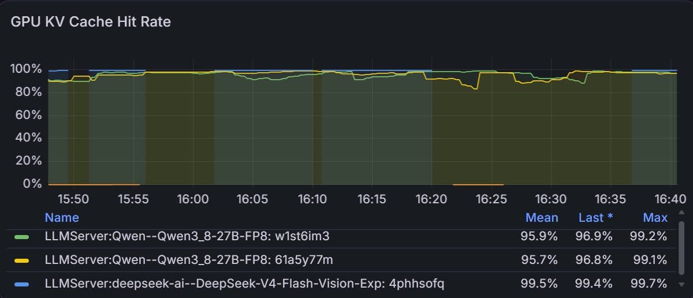

The benchmark said one second. Production said ninety.
What theoretical load tests reveal, what they hide, and why cache-aware routing can matter more to an agent’s time to first token than another round of kernel tuning.
On paper, the inference service was fast. Under a controlled high-concurrency workload it delivered almost 5,000 output tokens per second, with p95 time to first token around one second. Then a real agentic request arrived and waited a minute and a half before producing anything.
Both measurements were correct.
They described two different systems: one exercised a repeatable theoretical workload against a warm, measurable endpoint; the other crossed a multi-replica production platform with long shared prompts, changing conversation state and no guarantee that the next turn would reach a replica holding the useful prefix in its KV cache.
This is why I treat an inference benchmark as the beginning of capacity engineering, not the end. It establishes what the model and serving stack can do. Production traffic tells you whether the rest of the platform lets them keep doing it.
synthetic, concurrency 75
observed TTFT
agentic TTFT
First, build a benchmark you can repeat
I use two complementary harnesses. GuideLLM drives OpenAI-compatible endpoints from outside the cluster, which includes the gateway and serving path an application actually reaches. vllm bench serve runs closer to the workers and gives a useful token-shaped view of the inference engine itself.
The suite does not produce one magic score. It runs several prompt shapes across a concurrency sweep:
- Short synthetic prompts expose decode capacity and the point where throughput begins to flatten.
- Article-shaped requests use roughly 8,192 input and 1,536 output tokens to apply real prefill pressure.
- Tool-call workloads use shorter 512/128 shapes to approximate frequent agent turns.
- Pod-side random-token runs provide a second measurement path, useful for spotting gateway or client-side effects.
Every run records the deployment shape, model, serving version, GPU layout, concurrency, prompt distribution and errors. Interrupted suites can resume without silently mixing results, and every configuration change gets a new run directory. That bookkeeping is not glamorous, but without it an optimization result is just an anecdote.
Throughput and responsiveness are different questions
One representative Qwen 3.6 FP8 run used a single H100 replica with a compiled graph and FlashInfer. The short synthetic workload reached 4,972.6 output tokens per second at concurrency 75, with p95 TTFT at 1,021.7 milliseconds and no errors across 1,050 requests.
The same deployment behaved differently when the prompt shape changed:
| Workload | Concurrency | Output tok/s | TTFT | Errors |
|---|---|---|---|---|
| Short synthetic | 75 | 4,972.6 | p95 1.02 s | 0 / 1,050 |
| Article, 8k / 1.5k | 50 | 4,009.7 | p95 2.05 s | 0 / 150 |
| Tool call, 512 / 128 | 32 | 2,474.0 | p95 1.83 s | 0 / 404 |
| vLLM random, 8k / 1.5k | 32 | 3,071.2 | p99 2.25 s | 0 / 264 |
None of these rows is “the speed of the model.” Each is a point on a response surface. A deployment can maximize aggregate throughput while making each user wait longer. A layout that wins on short prompts can lose on long prefill. A change that improves mean latency can make the tail worse.
The benchmark is useful when it leads to an operating envelope—not when it produces the largest number.
Theoretical workloads deliberately simplify reality
A controlled benchmark has to freeze variables. That is its strength. It is also the reason it cannot reproduce every production failure mode.
Real agentic traffic is path-dependent. Each turn may repeat a large system prompt, tool definitions, policies, retrieved context and most of the conversation. The stable prefix can be far larger than the new user message. Requests arrive irregularly. Agents pause while tools run. Deployments have multiple replicas. Caches fill, fragment and evict.
Some synthetic datasets are intentionally cache-friendly and decode-focused. For a colder prefill test, I vary the dossier content and move unique material earlier in the prompt so requests share less reusable prefix. Both tests are useful, but they answer different questions:
- A cache-friendly test asks how efficiently the platform serves repeated structure.
- A cache-hostile test asks what happens when the engine must process most of the prompt again.
- A production trace asks whether the router preserves the reuse opportunity that the application naturally creates.
Why the KV cache changes TTFT so dramatically
During prefill, the model processes every input token and computes the attention keys and values needed for generation. Those tensors form the KV cache. If a later request begins with exactly the same token sequence and prefix caching is enabled, the engine can reuse cached blocks instead of recomputing that prefix.
That is unusually valuable for agents. Their prompts often contain thousands of stable tokens: the same system instructions, the same tool schemas, and the conversation accumulated so far. A new turn may add only a small suffix. With a cache hit, the engine mostly processes that suffix. Without one, it may prefill the entire history again.

In the production workload behind this chart, an empty or missed cache could push an agentic turn to roughly 90 seconds before the first token appeared. Keeping the relevant prefix warm—and routing the next turn to the replica that owns it—brought TTFT below one second.
That is not a small optimization. It is the difference between an agent that feels broken and one that feels interactive.
Enabling prefix caching is necessary, but not sufficient
A multi-replica deployment does not have one magical shared KV cache. Cache state is local to an engine instance. If successive turns are spread evenly across replicas without considering their prefixes, each replica sees a cold request and performs the same expensive prefill.
The platform therefore needs prefix-aware routing. At a high level, that means deriving a stable identity for the reusable prefix, tracking which replica is likely to hold it, and preferring that replica while it remains healthy and has capacity. The routing policy still needs an escape hatch: cache affinity must not send all hot traffic to an overloaded worker.
Prompt construction matters just as much. Prefix reuse requires token-level agreement from the beginning of the request. A timestamp, random identifier or differently ordered tool list near the top can invalidate the reusable prefix even when the prompts look semantically identical.
The practical rule: put stable content first, changing content last, keep tool and policy serialization deterministic, and route related turns with cache locality in mind.
What I monitor in production
Average latency cannot explain this class of problem. I want the signals that separate decode pressure, queueing and lost prefix reuse:
- TTFT percentiles per model, replica and workload class;
- prefix/KV-cache hit rate and cache occupancy;
- prompt tokens computed versus prompt tokens served;
- request queue depth, preemption and eviction signals;
- routing decisions and replica-level load;
- inter-token latency, which shows whether generation itself is slow;
- cold-start and post-deployment behaviour.
If TTFT spikes while inter-token latency remains normal, the problem is probably before decode: queueing, cold compilation, a long uncached prefill, or routing to the wrong replica. That narrows the investigation far more effectively than staring at aggregate GPU utilization.
A benchmark should become a capacity decision
The test suite still matters. It tells me where throughput saturates, how TP1 and TP2 layouts trade scheduling against per-token speed, whether a new CUDA or vLLM version regresses, and whether a speculative decoding technique remains stable under long load. It provides the repeatable baseline needed to make changes safely.
But the final deliverable is not a leaderboard. It is a set of production decisions:
- the replica and tensor-parallel layout for each workload;
- the maximum concurrency that respects the TTFT objective;
- the warm-up and deployment strategy;
- the prefix-aware routing policy and its overload fallback;
- the prompt conventions application teams must preserve;
- the dashboards and alerts that reveal lost cache locality.
A theoretical benchmark tells you the engine is capable of a one-second first token. Production engineering is everything required to make that promise survive the next agent turn.